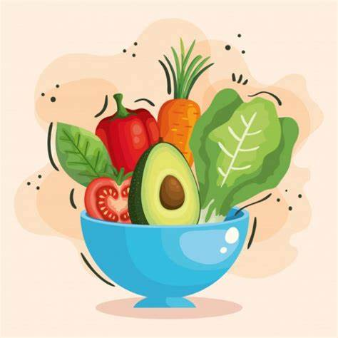

¿Que son la salud y nutrición?
La nutricion un aspecto critico de la salud y el desarrollo. La buena nutrición guarda relación con la buena salud de los niños y las madres, adultos mayores : sistemas inmunitarios más fuertes, embarazos y partos más seguros, menos riesgos de enfermedades no transmisibles tales como diabetes y enfermedades cardiovasculares.
¿Que es la nutrición?
Es el proceso biológico que ocurre en un ser vivo cuando su organismo absorbe, de los alimentos y líquidos, los nutrientes que necesita para su crecimiento y el desarrollo de las funciones vitales. A través de la alimentación, el organismo incorpora hidratos de carbono, vitaminas, minerales, proteínas y grasas.

Los seres humanos consumen distintos tipos de alimentos y, luego de procesos físicos y químicos, el cuerpo incorpora los nutrientes de estos alimentos y los transforma en energía para desarrollar sus principales funciones, como el movimiento, la reproducción y el crecimiento. Una buena y variada alimentación ayuda al correcto funcionamiento del organismo y, para eso, se deben incluir en las comidas distintos tipos de alimentos que aporten los diferentes nutrientes.
¿Que es la salud?
Salud es la condición de todo ser vivo que goza de un absoluto bienestar tanto a nivel físico como a nivel mental y social, según la definición de la Organización Mundial de la Salud (OMS). Es decir, el concepto de salud no sólo da cuenta de la no aparición de enfermedades o afecciones, sino que va más allá de eso. En otras palabras, la idea de salud puede ser explicada como el grado de eficiencia del metabolismo y las funciones de un ser vivo a escala micro (celular) y macro (social).
El estilo de vida, o sea el tipo de hábitos y costumbres que posee una persona, puede ser beneficioso para la salud, pero también puede llegar a dañarla o a influir de modo negativo sobre ella. Un individuo que mantiene una alimentación equilibrada, cuida su nutrición y realiza actividades físicas en forma cotidiana tiene mayores probabilidades de gozar de buena salud. Por el contrario, una persona que come y bebe en exceso, no tiene un buen descanso, fuma y descuida su higiene, corre serios riesgos de sufrir enfermedades evitables.
HEALTH/NUTRITION
Articulos informativosn para el bienestar en la salud y cuidado en nutricion adecuada disponible en nuestro menu.
CONÓCENOS
Esta pagina fue desarrollada para el bienestar de las personas, que desean mejorar sus habitos alimenticios.
INFORMACION OBTENIDA
Recopilamos informacion de diferentes fuentes, incluso otras paginas web de este estilo, el link de estas paginas disponibles en el menu.
Síguenos en:
.png)
.png)
.png)